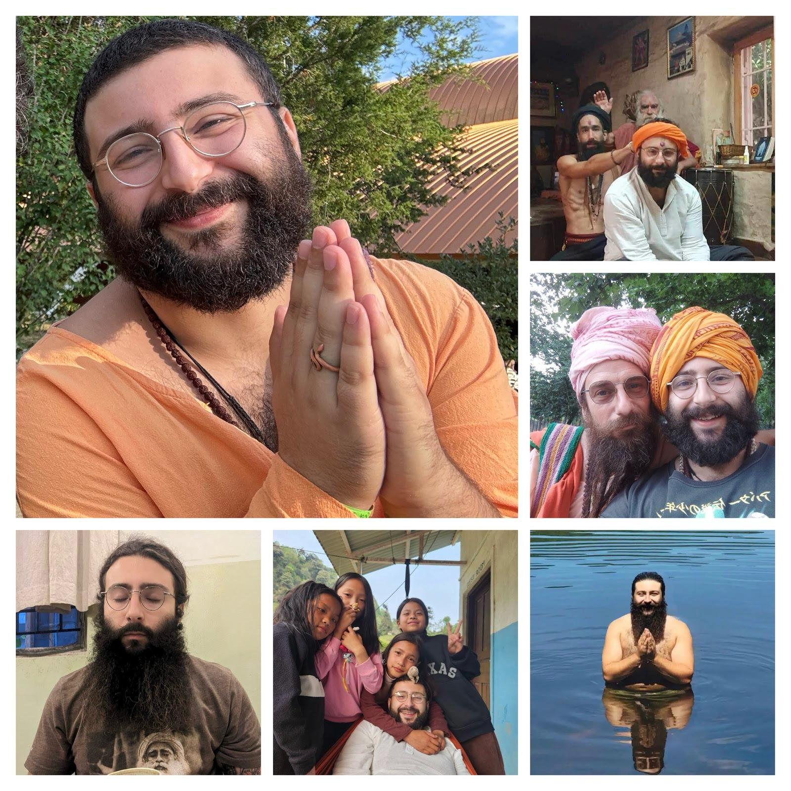

Once addicted and on the brink of death, I didn’t find spirituality—I was dismantled by it.
What began as a collapse turned into a calling. Through addiction, incarceration, and the unraveling of everything I thought I was, I was brought to my knees—literally. And in that moment of surrender, something ineffable revealed itself. Across time and tradition, it has worn many masks—God, the Dao, Elohim, Brahman, Yahweh, the Great Spirit, the Beloved. But none can contain it. They are only shadows cast by the same flame. And perhaps the most overlooked mask of all… is the one you see when you look in the mirror.
Since then, my life has been devoted to the pathless path. I’ve immersed myself in life—experiencing it, rather than interpreting it. After years of inner work and devotional practice, it became clear: Nirvana isn’t something you attain—it’s what remains when everything false dissolves—by the mercy of grace.

Practice softens you. Grace opens you. What remains is freedom.
Beneath every identity and belief is a deeper reality, always waiting to be remembered.
My work isn’t about handing you answers. I don’t teach beliefs. I offer guidance—direct transmissions—pointing you beyond name, beyond form, beyond sensation.